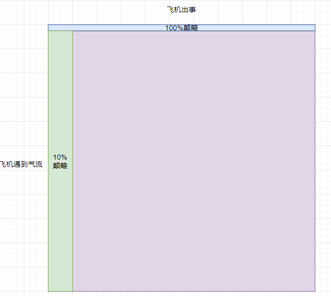
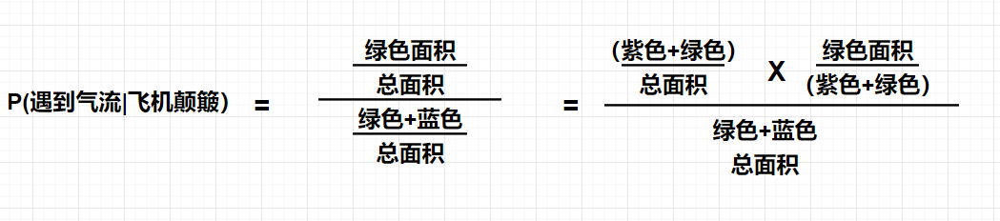
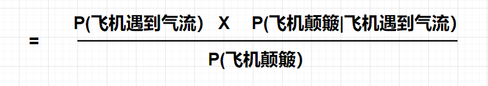
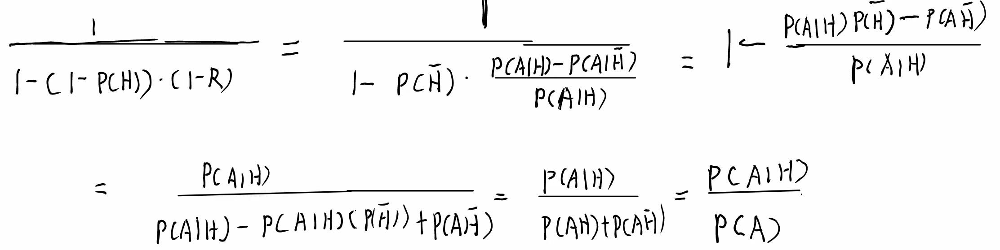
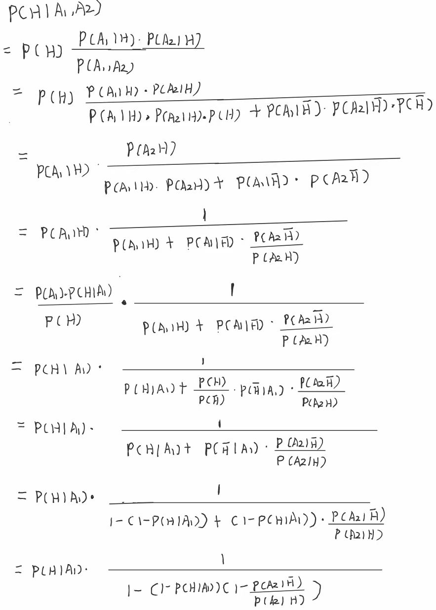

贝叶斯估计
这是北航由刘雪峰老师讲授的信号处理与信息推断课程，本人根据老师PPT在期末复习时总结如下，如有侵权，立刻删除。
在这里也鼓励计算机学院的大家去选这门课，真的对人生很有帮助。
前置知识
信息推断
信息推断是指从观察到的现象、推测出现象背后隐藏的信息。
错误的信息推断
黑白思维
定义
一件事情发生的原因只有一个，而且是我认为的那个，在此期间我只会找能加强我认为的原因的证据来确信想法。
问题
- 事情发生的原因不止一个
- 证据是没有用的，你只找加强你自信心的证据
较好的信息推断
概率思维
定义
找到一件事情背后尽可能的原因，搜集尽可能的数据，来给原因给予概率，找最大的原因作为最终的原因。
好处
- 不会遗漏原因
- 证据有用，用来调整概率
- 信息量大（搜集了全面的证据）
最大似然估计
定义
对于一件事情列举所有可能的原因，找到每一个原因产生该事实的概率，选择概率最大的原因作为结论，即最有可能产生该现象的原因。
地位
这是概率思维的具体体现
特点
- 好处自然是概率思维的好处
- 缺陷：忽略了这个原因本身发生的可能性，可能会导致结论出错。
举例
坐在飞机上飞行，突然飞机剧烈颠簸，显然有如下的两个原因：
- 飞机出现故障
- 飞机遇到了气流
根据最大似然估计，若飞机出现故障，几乎100%会剧烈颠簸，但若飞机遇到气流，却不一定会剧烈颠簸，所以按照最大似然估计，我们认为飞机出事了。
但实际上，飞机作为世界上最安全的交通工具，出事的概率为20万分之一，而遇到气流的概率为10%，我们尽可能地往小估计，遇到气流后，发生颠簸的概率为10%，那么坐100次飞机我们遇到一次颠簸，坐200000次飞机遇到一次出事，现在还能说我们认为飞机出事吗？
贝叶斯
概率概念
先验概率
指根据以往经验和分析。在实验或采样前就可以得到的概率。
P（原因i）就是在观测之前，对于原因i本身成立的概率的评估。
后验概率
指某件事已经发生，想要计算这件事发生的原因是由某个因素引起的概率。
似然概率
P(观测到的现象|原因i),是在原因i成立时，观察到该现象出现的概率。这概率描述了原因i的解释力度。
总体概率
P（观测到的现象），是指在没有任何前提下，该观测到的现象总体发生的概率。
贝叶斯定理
$$P(AIB) = { {P(A)P(BIA)} \over {P(B)} }$$转化到信息推断这里就是：P(原因i|观测到的现象) = P(原因i) * P(观测到的现象|原因i) / P(观测的现象)
图形解释

根据《雄厚》的数学功底，我们要想求P（飞机遇到气流|飞机颠簸），就是相当于求左边绿色的区域/（绿色+蓝色）区域总和
现在我们等价变形如下：

显然，这就是贝叶斯公式：

文字解释
贝叶斯公式的含义就是：后验概率是在先验概率的基础上用观测的现象进行调整的结果。
我们选择最大的后验概率，就是选择了既能够在一定程度上解释观测到的现象，本身又常见的原因。
应用
- 奥卡姆剃刀：对于一个或多个现象，能用假定最少解释的，绝不用假定多的
这是由于假定越少，先验概率越大。在奥卡姆剃刀中假设似然概率相同。
先验概率
先验概率的重要性
原因
- 先验概率是该原因整体上发生的概率，在贝叶斯公式中占有很高的地位，所以有时候起着一锤定音的作用。
- 在很多能解释现象的原因上，似然概率都大差不差，所以中心就在于先验概率
举例
- 守门员扑点球根据先验概率，每个球员的常用点球方向
- 外部视角看待事情，外部视角代表着先验概率
- 锚定效应，起始的锚锁定了你的先验概率。
- 汉隆剃刀，能用愚蠢解释不用恶意解释，这个世界对你的恶意远没有你想象的多，所以以恶意作为先验概率必然低。
先验概率的求法
- 根据对象的历史记录
- 用样本估计总体
似然概率
全概率公式
$${ {P(AI{H_i})} \over {P(A)} } = { {P(AI{H_i})} \over {P(AI{H_1}) \times P({H_1}) + P(AI{H_2}) \times P({H_2}) + \cdots P(AI{H_n}) \times P({H_n})} }$$观测的信息量
定义
出人意料的程度，某个信息的信息量，改变认知越大，越出乎意料，信息量就越大，反之越小
判断
依旧是贝叶斯公式：
$$P({H_i}IA) = P({H_i}) \times { {P(AI{H_i})} \over {P(A)} }$$
P（Hi）是先验概率，在观测前对Hi的认知
P（Hi|A)是后验概率，是在观测后对Hi的认知
后验概率是在先验概率的基础上，用当前观测做的调整。
调整幅度大，越说明这个观测的信息量大，因为它改变了你的认知，信息量大的证据也叫排他性证据
解释与排他
解释一件事情是很容易的，即很容易找到可以引起这个观测的原因，但找到排他性证据是很难的，即很难找到一个只能被一个原因解释的观测。
改变观念的难度
原因
- 因为坚信观念，所以主动收集加强观念的证据
- 因为坚信观念，证据也很难立刻改变认知。
数学推导

其中,R = P(A|~H) / P(A|H)
可见以下三种情况
- R > 1,则分母最终大于1，后验概率相比先验概率变低，说明~H比H能够更好的解释观测A.
- R < 1,则分母最终小于1，后验概率相比先验概率升高，说明H比~H能够更好的解释观测A.
- R = 1,则分母最终等于1，后验概率相比先验概率不变，说明H和~H对观测A的解释力度相当.
与此同时，最终的变化幅度还受到了1-P(H)的限制，而如果坚信观念，我们认为P（H）一般比较高，所以1-P(H)很低，变化幅度被大幅削弱了，这说明观念的难以改变。
条件独立
定义
理解一
在数学上，如果事件A和事件B关于事件C条件独立，那么有P(A,B|C) = P(A|C) * P(B|C)
事件C发生的前提下，A和B同时发生的概率等于在C发生的前提下A发生的概率乘以C发生的前提下乘以B发生的概率。
理解二
P(A|B,C) = P(A|C)P(B|A,C) = P(B|C)
如果事件A和事件B关于事件C条件独立，那么在事件C发生的前提下，我们能否知道A（或者B）发生了，对我们推断B（或者A）发生了没有任何帮助。
作用
很多情况下，两个事件从统计意义上是相关的，但是它们都是关于背后的另外一个事件条件独立的。
多观测下的贝叶斯
公式
$$P({H_i}I{A_1},{A_2}) = P({H_i}) \times { {P({A_1},{A_2}I{H_i})} \over {P({A_1},{A_2})} }$$用信息推断来讲，就是P（原因i|观测1，观测2）= P（原因i） * P（观测1，观测2|原因i）/ P（观测1，观测2）
扩展
- 若两个观测在Hi下条件独立，原式可化简为
- 若两个观测在H1,H2,H3…Hn下都条件独立，原式可进一步化简为
依次到来的观测
引入
设想这样一种情形，我们想对某件事情做一个推断，但观测是依次到来的，我们的贝叶斯计算显然如下：
- 观测1到来，计算P(原因i|观测1)
- 观测2到来，计算P(原因i|观测1,观测2)
- 观测3到来，计算P(原因i|观测1,观测2,观测3)
这确实是显然的，但在计算策略上，我们是否需要每次都利用贝叶斯重新计算一次？
在线贝叶斯
定义
- 和某个原因相关的观测是源源不断到来的。
- 在拿到一个新观测的时候，不需要根据所有的观测来重新计算后验概率，而是在之前的后验概率基础上，用新的观测来更新
公式
$$P({H_i}I({A_1},{A_2} \ldots {A_{k - 1} }),{A_k}) = P({H_i}I({A_1},{A_2} \ldots {A_{k - 1} })) \times { {P({A_k}I{H_i})} \over {P({A_k}I({A_1},{A_2} \ldots {A_{k - 1} }))} }$$文字描述就是：（K时刻的后验概率 = K-1时刻的后验概率 * K时刻的标准化的似然概率）
道理
- 观点要随着事实的改变而改变
- 证据比较少时候切莫盖棺定论
- 初始的先验概率可能并不重要
- 重要的是不断地调整自己认知
离线贝叶斯
定义
每次到来一个新观测就利用贝叶斯公式全部重新计算一次。
比较
- 在线贝叶斯是一种精益求精的策略，即最开始的时候不求结果的完美，只是先寻求一个结果，之后根据观测不断打磨结果。
- 离线贝叶斯是一种步步为营的策略，每一步都力求正确，最后得到一个正确结果
现实贝叶斯
举例
住在北京海淀区世纪城小区的一家五口人，父亲35岁，母亲30岁，小孩6岁刚上小学，小孩的姥姥姥爷帮忙照顾小孩，请问这家养狗的概率是多少
梳理
已知的观测（证据）如下：
- A1:5口之家
- A2：年龄
- A3：姥姥姥爷帮忙照顾小孩
- A4：海淀区世纪城小区
养狗（H）的概率利用贝叶斯公式，计算如下：
$$P(HI{A_1},{A_2},{A_3},{A_4}) = P(H) \times { {P({A_1}IH) \times P({A_2}IH) \times P({A_3}IH) \times P({A_4}IH)} \over {P({A_1},{A_2},{A_3},{A_4})} }$$
现在的问题是，我们并不知道公式右边的概率。
解决思路
- 把所有的观测分成两组，利用在线贝叶斯的思想，一组放在先验概率中，另外一组放在似然概率。
- 用统计数据直接找到先验概率，不计算，并且忽略似然概率
更具体地一些说，现在有n个观测，A1…An,我们将其划分到两个集合A和B中，把A放在先验概率中，把B作为当前观测：
$$P({H_i}I{A_1},{A_2},{A_3},{A_4}) = P({H_i}IA) \times { {P(BI{H_i})} \over {P(BIA)} }$$
然后把似然概率忽略掉，直接认为先验概率为所求。
分组原则
- 先验的统计数据容易拿到。
- 把信息量大的观测放到集合A里面。
两个观测的现实贝叶斯
两个观测的贝叶斯定理，我们需要选一个放入先验，选一个放入似然，选哪个？
数学推导

考虑我们的近似过程，我们显然希望P(H|A1,A2) = P(H|A1)尽可能成立，只有这样证明似然并没有扭转先验，即使我们进行了近似结果也不会相差很大。
考虑一下三种情况：
- 先验概率P(H|A1)接近1，而且P(A2|~H)/P(A2|H)不会无穷大。
即A1的解释力度很大，A2不排斥这个证据（观测），此时应该把A1放入先验，A2放入似然，此时后验概率接近1.
- 先验概率P(H|A1)接近0，而且P(A2|~H)/P(A2|H)不会接近0
即A1强烈反对某个观测。而A2并不排斥另外一个假设，此时应该把A1放入先验概率，把A2放入似然概率中，此时后验概率接近0
- P(A2|~H)/P(A2|H)接近1，
即A2这个观测不属于排他性证据，不能帮助我们更好的区别H和~H，信息量不大。应该放入似然概率中。
多个观测的现实贝叶斯
引入
一个学生找工作，其基本情况如下：男，XX大学，硕士生，XXXX实验室。2017年毕业，有过少量硬件开发的经验和网页开发经验，掌握一些算法和信号处理知识，请问他找到好工作的概率是多少？
问题
显然我们可以得到以下的观测：
- A1：XX大学硕士
- A2：2017年毕业
- A3：XXXX实验室
- A4：有过少量硬件开发的经验和网页开发经验
- A5：掌握一些算法和信号处理知识
- H：找到工作
我们要求的便是P(H|A1,A2,A3,A4,A5),我们要将一些观测放入先验，其余丢入似然。显然A1,A2,A3的信息量比较大，所以将其放入先验，即我们最终求的是P(H|A1,A2,A3)
P（H|A1,A2,A3）：2017年毕业的XX大学XX实验室的硕士生找到好工作的概率。我们寻求它的统计数据
显然不见得，样本数量太少了。且本身就很难拿到数据。显然我们又陷入了新的困境
解决
降低观测数量
将P(H|A1,A2,A3)变为P(H|A1,A2)，这样拿到的样本的数量就会增多，我们就更容易拿到相关的数据统计。
增大观测颗粒度
- XX大学XX实验室硕士生
- XX大学硕士生
- XX市985高校的硕士毕业生
- 全国985高校的硕士毕业生
- 全国一本的硕士毕业生
- 全国的硕士毕业生
从上到下颗粒度逐渐上升，数据统计获取越来越容易。这体现了分层描述的思想。
分层描述法
定义
围绕被观测的对象，在不同的颗粒度上将该对象的所有信息展现出来
步骤
- 明确对象：忘掉观测，明确这个问题中我们观测的对象是谁
- 描述对象：明确了这个对象之后，重新组织现有的观测，对该对象的特点进行由粗粒度到细粒度的多级描述。此外，在分层描述法中，信息量大的观测要尽量放在前面的层次上。
- 寻找统计：根据多级描述，找到颗粒度最细，并且能够从网上查到对应的统计数据的那个描述。把该描述对应的观测放入集合A中。
举例
对于刚才的例子，我们重新整理所有的观测：
- 这是一个2017年985高校的硕士毕业生
- 这是一个2017年XX学校的硕士毕业生
- 这是一个2017年XXX学校XXX实验室的硕士毕业生
- 这是一个2017年XXX学校XXX实验室的硕士毕业生，过少量硬件开发的经验和网页开发经验，掌握一些算法和信号处理知识。
经过查找资料，我们最终找到了第二层的资料。将其放入先验，得到结论，他的就业率大概是95.80%
以上理论部分全部结束，下面是一些在别的领域的应用，仅供加深印象
医学领域的贝叶斯
前置概念
- 漏报：漏报被称为“假阴性”，这是由于他本身是阳性，但诊断却为阴性
- 误报：误报被称为“假阳性”，这是由于他本身是阴性，但诊断却为阳性
- 假阴性率：用此来衡量漏报的程度，用某种方法来检测100个已经被确诊的患者，如果有90个被检出，那假阴性率为10%。本质为在已经确诊的前提下，检测结果为阴性的条件概率。
- 真阳性率：用此来衡量漏报的程度，用某种方法来检测100个已经被确诊的患者，如果有90个被检出，那真阳性率为90%，本质为在已经确诊的前提下，检测结果为阳性的条件概率。
- 假阳性率：用此来衡量误报的程度，用某种方法来检测100个健康或者未患该病的人，如果有10个被检出，那假阳性率为10%，本质为在未患该病的前提下，检测结果为阳性的条件概率。
- 真阴性率：用此来衡量误报的程度，用某种方法来检测100个健康或者未患该病的人，如果有90个未被检出，那真阴性率为90%，本质为在未患该病的前提下，检测结果为阴性的条件概率。
医生诊病
正常做法
列举所有可能的原因。
搜集所有可能的证据，计算每个原因的后验概率。
医生做法
- 列出所有原因，按照可能性和成本综合排序
- 每次针对一个原因来搜集相关的证据，用来证实或者排除该原因。
调整其概率，自然其他的原因的后验概率也会随之改变，一举多得。
关键
- 找排他性证据来大幅调整先验概率。
- 将多选一变为二选一，即将诸多原因分类为我要研究的那个原因和剩下的所有原因。
道理
- 将多选一变成二选一
- 收集那些能够帮助估计后验概率的信息
- 避免收集无效信息
- 证据的性价比和采集顺序，用漏报率低且成本低的方法快速筛掉大部分不符合要求的，在剩余的选项中采用更精确的方法来排除误报。
- 检查多不一定就是好医生，即使不考虑成本，如果某个病的基础概率低，而某种检测手段又会存在假阳性时，就很可能被误报。
一道经典的题型：有一名病人，他可能患有两种疾病中的一个（H1和H2），现在观察到了A1，并且知道了H1的情况下症状A1发生的概率，即P(A1|H1)，我们接下来怎么做来更加确信他患的什么病？
- 找H2发生的情况下A1发生的概率P（A1|H2）
- 找H1的另一个症状A2并找到概率P（A2|H1）
- 找H2的另一个症状A2的概率，即P（A2|H2）
答案是1，因为1可以帮助我们对比H1和H2在这个症状上的解释力度。相比23更为合适。
媒体领域的贝叶斯
震惊
对于让你感到震惊的消息，必然是扭转了你的先验概率，对于这种事物，必须加以小心，分析他的证据是否是排他性的。
证据错误
证据不可信
证据的渠道不可信，导致证据不可信
证据不量化
有句话说得好：抛开剂量谈毒性，都是耍流氓，给出证据时只说这样做有害，却不说到哪个程度有害。
个例代统计
有偏采样
幸存者偏差
在采样的时候只考虑到幸存者而没能接触到更重要但无法幸存的样本，因而导致结论出现错误
伯格森悖论
两个通常独立的事物会在特定场合下关联起来，由此产生的相关性容易带来认知上的偏差，导致两个本来无关的变量之间体现出貌似强烈的相关关系。
使用贝叶斯需要注意
- 不要漏掉可能的原因
- 不要漏掉重要的观测
- 不要找错先验概率的条件
- 不要把熟悉的当作概率高的
被媒体扭曲的先验概率
- 媒体反复报道小概率事件，让你觉得这事件发生概率不低
- 媒体恶意裁剪观测（证据），让你的先验发生改变。
- 信息茧房
阴谋论
几乎所有的事情都可以用阴谋论来解释，因此阴谋这个原因对一般事物的解释力度很高。
但我们忽略了阴谋的先验概率